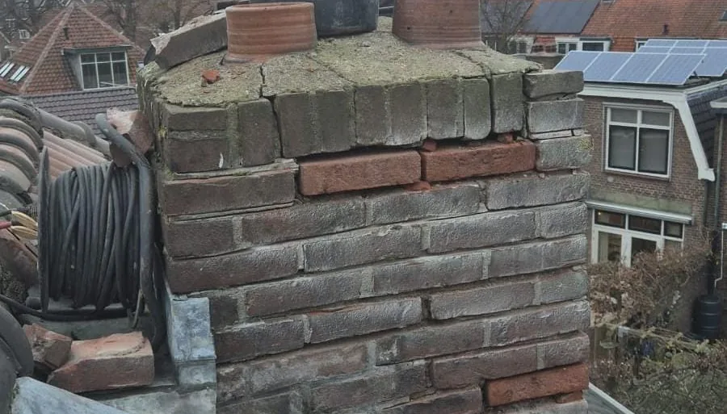
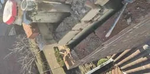
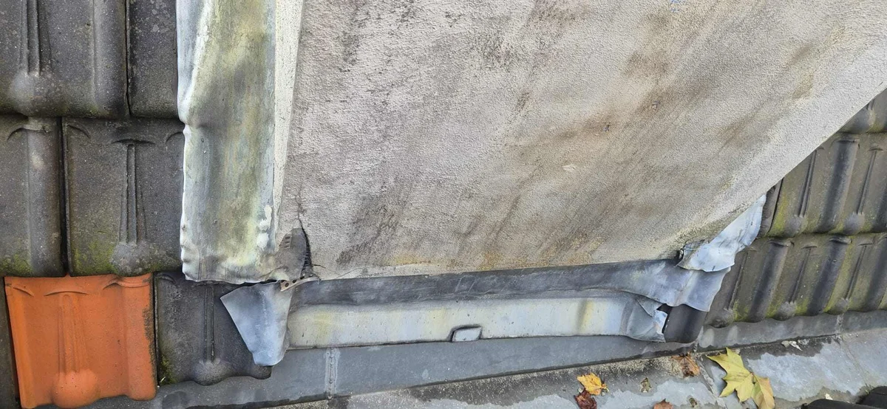

Welke schoorsteenaanpak past bij uw situatie?
Een schoorsteenprobleem lijkt vaak eenvoudig, maar de juiste oplossing hangt af van wat er precies misgaat: voegwerk, lood, metselwerk, vocht, instabiliteit of een schoorsteen die niet meer nodig is. Deze keuzehulp helpt u snel bepalen welke vervolgstap logisch is.

Gebruik deze pagina als keuzehulp: herken eerst uw situatie, kies daarna de route die technisch het beste past. Twijfelt u? Dan is inspectie of lekkage opsporen verstandiger dan direct repareren.
Wat herkent u aan uw dak?
Kies het signaal dat het dichtst bij uw situatie komt. U ziet direct welke dienst of vervolgstap logisch is.
Vocht rond schoorsteen of zolder
Vaak zit de oorzaak in schoorsteenlood, voegwerk of de afdekking.
Slecht voegwerk of losse stenen
Dan gaat het meestal om renovatie of metselwerkherstel.
Lood zit los, scheurt of is uitgezakt
Kies dan voor schoorsteenlood vervangen, eventueel tot in de spouw.
Schoorsteen is overbodig of blijft problemen geven
Verwijderen kan dan verstandiger zijn dan blijven repareren.
Schoorsteen is beschadigd of instabiel
Bij ernstige schade is opnieuw opmetselen soms de meest duurzame route.
U wilt een nettere afwerking
Pleisteren kan esthetisch zijn, maar alleen als de ondergrond technisch klopt.
Welke pagina past bij uw situatie?
Onderstaande routes helpen bezoekers direct naar de juiste detailpagina.
Schoorsteenrenovatie
Bij uitgesleten voegen, poreuze stenen of algemene slijtage.
Schoorsteenlood vervangen
Bij lekkage langs de aansluiting met het dakvlak.
Schoorsteenlood spouw vervangen
Als de waterkering dieper in de constructie niet meer betrouwbaar is.
Metselwerk repareren
Voor gescheurd of los metselwerk rond de schoorsteen.
Schoorsteen opnieuw opmetselen
Als herstellen niet meer verstandig is.
Schoorsteen verwijderen
Als de schoorsteen geen functie meer heeft of structureel problemen blijft geven.
Waar u op kunt letten

Schoorsteenherstel: bij zware slijtage kan opnieuw opmetselen beter zijn dan lokaal repareren.

Gepleisterde schoorsteen: een nette afwerking werkt alleen goed als de ondergrond technisch klopt.
Veelgestelde vragen
VraagWanneer kies ik renovatie in plaats van alleen lood vervangen?▾
Als niet alleen de aansluiting lekt, maar ook stenen, voegen of de opbouw verouderd zijn. Dan lost alleen nieuw lood het probleem vaak niet duurzaam op.
VraagIs een lekkende schoorsteen altijd spoed?▾
Niet altijd, maar vocht kan snel in metselwerk en hout trekken. Bij actief water of natte isolatie is snel handelen verstandig.
VraagKan een schoorsteen ook beter verwijderd worden?▾
Ja. Als de schoorsteen geen functie meer heeft en steeds problemen geeft, kan verwijderen technisch en financieel logischer zijn.
Nog niet zeker? Kies dan niet op basis van een losse foto of vochtplek. Bel ons of vraag een gratis inspectie aan, dan bepalen we welke route technisch logisch is.